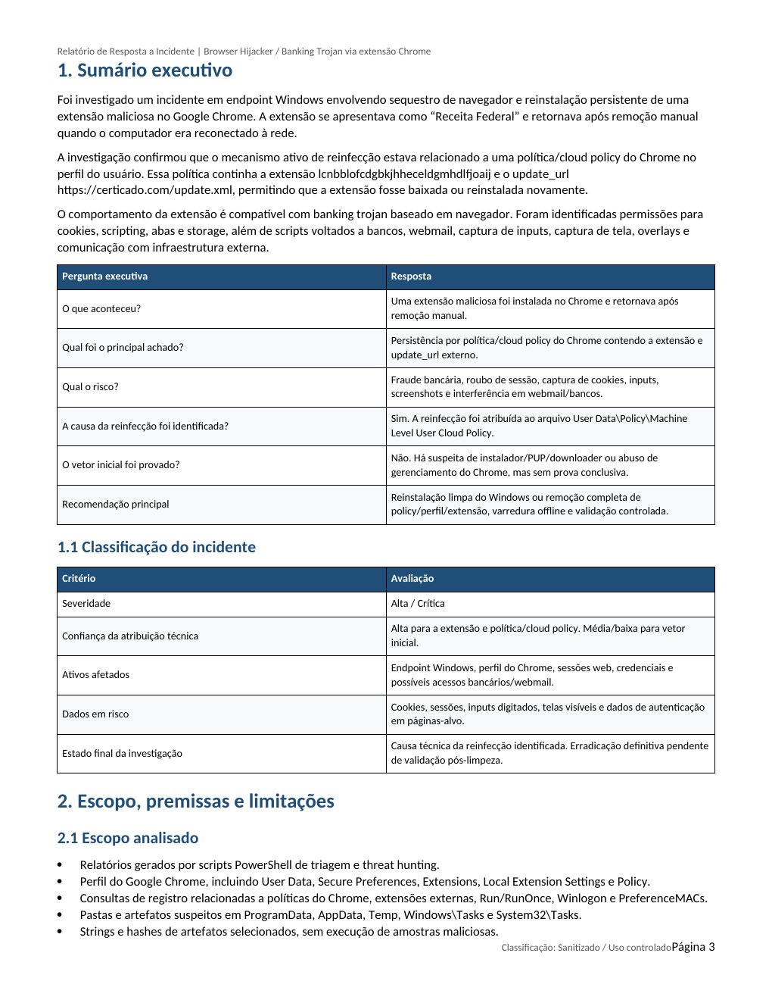
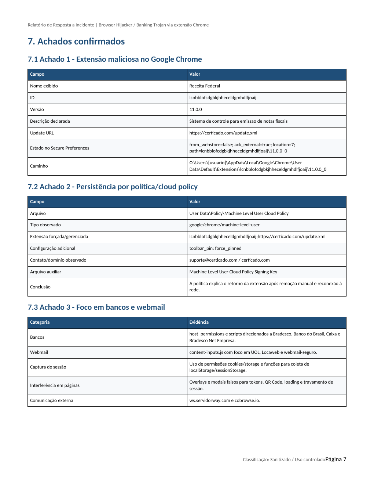
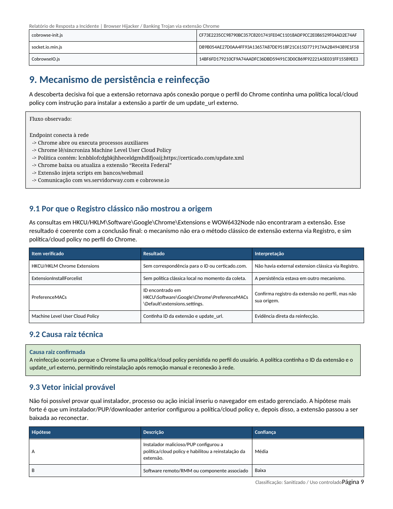

Persistência confirmada, vetor inicial não confirmado
A extensão se apresentava como “Receita Federal” e retornava após remoção manual quando o computador era reconectado à rede. A investigação confirmou que o Chrome lia uma política no perfil do usuário contendo o ID da extensão e um update_url externo.
A causa técnica da reinfecção foi identificada. O vetor inicial que configurou a política não foi preservado de forma conclusiva.
Relatório sanitizado com metodologia, evidências, linha do tempo, MITRE ATT&CK e recomendações.
Classificação baseada no foco em bancos, webmail, cookies, sessões, inputs e capturas de tela.
Uma remoção manual que não eliminava a causa
O comportamento sugeria browser hijacker com persistência. A extensão retornava após remoção e reconexão, enquanto as consultas clássicas de ExtensionInstallForcelist no Registro não explicavam o mecanismo.
- Extensão exibida como Receita Federal.
- Retorno após remoção manual e reconexão controlada.
- Permissões para cookies, storage, abas e scripting.
- Scripts direcionados a bancos e webmail.
Coleta controlada e comparação de estados
A análise combinou triagem forense leve, hashing, extração passiva de strings, inspeção do Registro e revisão do Chrome User Data. Nenhuma amostra foi executada durante a análise assistida.
- 01 · TriagemPreservação de artefatos e revisão de tarefas, extensões e arquivos recentes.
- 02 · ComparaçãoEstado offline comparado ao estado após reconexão controlada.
- 03 · Perfil ChromeAnálise de Extensions, Secure Preferences, Local Extension Settings e Policy.
- 04 · ConfirmaçãoMachine Level User Cloud Policy vinculada ao retorno da extensão.
Causa técnica documentada e plano de resposta
A política persistida no perfil do Chrome explicava a reinstalação da extensão. O relatório separa achados confirmados, IOCs auxiliares, hipóteses, itens reclassificados e limitações.
Isolamento do endpoint, preservação de evidências, bloqueio de indicadores e revogação de sessões.
Remoção controlada de policy, perfil e extensão, seguida de varredura offline.
Perfil limpo, troca de credenciais em dispositivo confiável e revisão de MFA.
Reconexão controlada e confirmação da ausência da extensão, policy e novos acessos aos IOCs.
Documento sanitizado e páginas-chave
As imagens abaixo pertencem ao relatório público sanitizado. Evidências completas e identificadores internos permanecem fora do portfólio.







O que sustentou a conclusão
- Tratar relatos visuais como observação, não como confirmação técnica.
- Separar a extensão e a política confirmadas de artefatos auxiliares suspeitos.
- Comparar o estado antes e depois da reconexão à rede.
- Incluir Chrome User Data e políticas do perfil no playbook de investigação.
- Mapear o caso em técnicas MITRE ATT&CK compatíveis: T1176, T1036, T1113, T1539 e T1056.
O que não pode ser afirmado
- O vetor inicial não foi confirmado.
- Nenhuma amostra foi executada durante a análise assistida.
- A remoção manual anterior alterou parte do estado antes da coleta final.
- Sem validação pós-limpeza ou reinstalação, não é correto declarar o sistema confiável.
Leia a metodologia, os IOCs e as recomendações completas no documento sanitizado.
Abrir relatório PDF